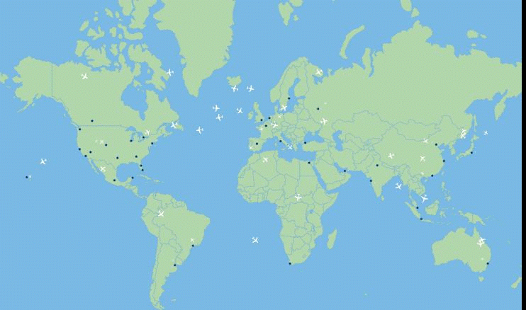

Recorridos sobre grafos
Inicio
Si tuviera que responder esta pregunta: ¿Puede visitar TODOS los aeropuerto del mundo desde cierta ciudad?
¿Cómo lo resolverías?
Objetivos
El objetivo principal es comprender los diferentes recorridos en grafos.
Conocimiento previo
Conocimiento sobre teoría de conjuntos. La estructura de datos Grafos. Análisis de algoritmos.
Autores
Catalina Mostaccio y Gabriela Pérez
Obra publicada con Licencia Creative Commons Reconocimiento Compartir igual 4.0